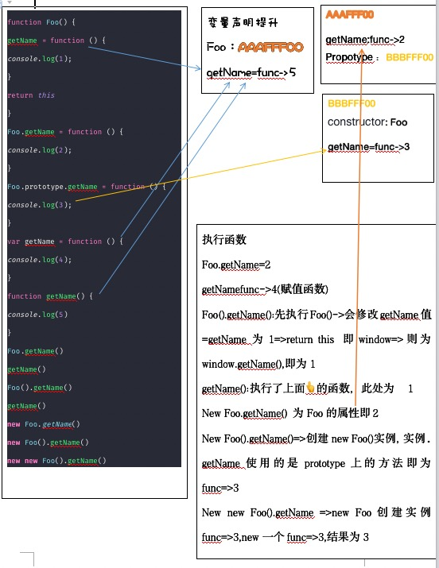

function Foo() { getName = function () { console.log(1); } return this } Foo.getName = function () { console.log(2); } Foo.prototype.getName = function () { console.log(3); } var getName = function () { console.log(4); } function getName() { console.log(5) } Foo.getName() getName() Foo().getName() getName() new Foo.getName() new Foo().getName() new new Foo().getName()
